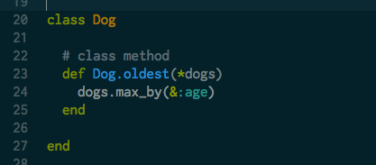
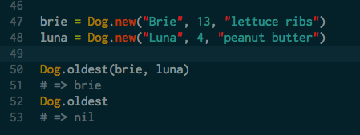

MEG MAKES
Drinking from the web development fire hose at Dev Bootcamp.
Tech talk: Class methods v. instance methods
September 10, 2014
In last week's technical post, we built our own Ruby class Dog. In addition to giving each Dog object certain characteristics, the class defined several actions that can be performed by each instance of the class such as aging the dog a year through the method one_year_older or updating the dog's favorite treat with the method update_fave_treat. one_year_older and update_fave_treat are both instance methods - they are performed by one particular instance of the class.
In addition to instance methods, we can also define class methods, which send messages to the class itself rather than to the instances of the class. It's important to remember that classes are objects as well, and this is why they can have their own methods. As described in The Well Grounded Rubyist: "A class object has its own methods, its own state, and its own identity. It doesn't share these things with instances of itself." If you try calling a class method on an instance of the class, the computer will give you an error message.
How do you know when to use a class method? Think about the object to which you are trying to send the message. In the case of one_year_older, we want to age one particular dog by one year, not all dogs by one year, so we are sending the age by one year message to an instance of the Dog class. Let's say we wanted to find the oldest Dog object that has been created by defining the method oldest. To do this, we need to look across multiple instances of the Dog class rather than just one particular instance so oldest would be a class method. Any method that is elevated from just one particular instance should be a class method rather than an instance method
The class method definition looks very similar to the instance method definition with one exception: the class name is included before the method name followed by a period. The class method oldest takes Dog objects as it's argument. The asterisk before the word dogs indicates that the method is flexible in terms of the number of arguments it takes - it can handle as many or as few dog objects as you would like to search through. Inside the method we call the max_by method on the Dog objects to find the instance with the maximum age. Let's test out the oldest method:
First, we create to Dog objects, brie and luna. We then call the oldest method on the Dog class with brie and luna as the arguments. Since at 13 years brie is older than 4 year old luna, the brie object is returned. If we call the oldest method without any arguments, nil is returned.
You can check out the updated code for the Dog class in my GitHub repository here.